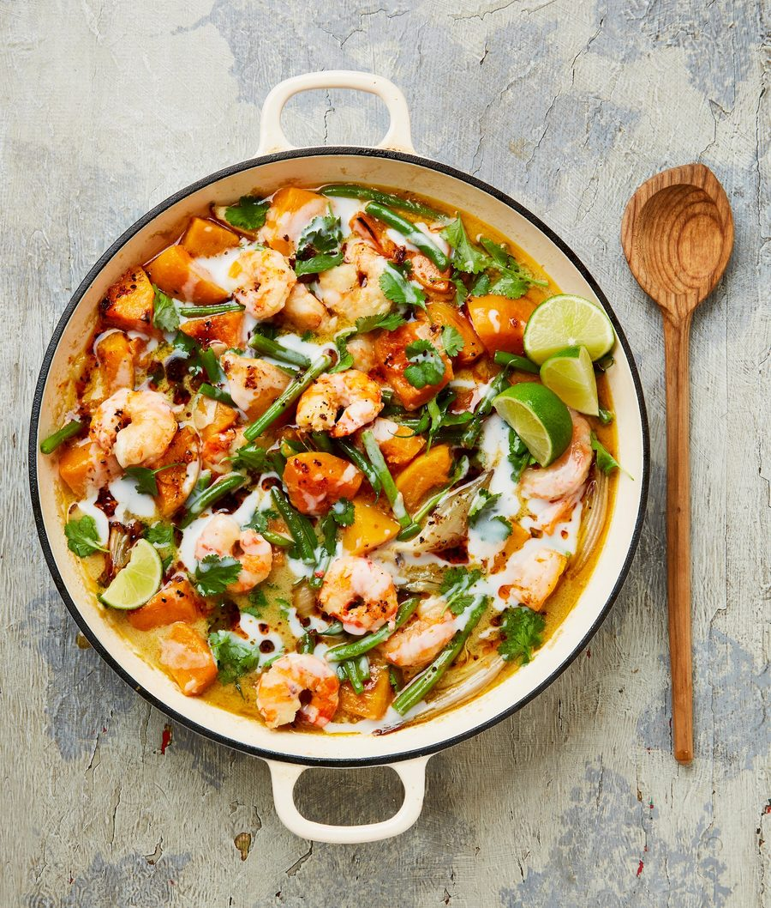

Ginataang kalabasa with ginger and prawn oil

In the Philippines, ginataang refers to any dish cooked in coconut milk or cream. This stew-type dish is usually served with a generous helping of bagoong, a condiment made with fermented fish or prawns. Here, I’ve maximised on the “prawniness” by using fresh prawns in the stew, the heads in a flavourful stock and the shells in an incredible oil to pour on top. Serve with rice.
Heat the oven to 240C (220C fan)/475F/gas 9. Put the squash, shallot quarters, a tablespoon of olive oil, half a teaspoon of salt and a good grind of pepper on a large baking tray, toss to coat, then roast for 10 minutes. Remove the shallots and set aside (they’ll have softened, but not darkened), then return the tray to the oven and roast the squash for 10 minutes more, until soft and lightly coloured at the edges.
Meanwhile, make the prawn oil. Put the prawn shells (not the heads) and sunflower oil in a medium saucepan on a medium-low heat and simmer, stirring occasionally, for 15 minutes, until the shells are pink and the oil fragrant. Pass through a sieve set over a small bowl, then discard the spent shells. Set aside two tablespoons of the prawn oil, pour the rest back into the saucepan and stir in the ginger, aleppo chilli and a quarter-teaspoon of salt. On a low heat, bring to a simmer, cook gently for 15 minutes, then set aside.
Meanwhile, make the prawn stock. Put a large saute pan for which you have a lid on a medium-high heat. Once hot, add the remaining two tablespoons of olive oil and the prawn heads, and fry for five minutes, until pink and fragrant. Add 500ml water, cover and simmer for 10 minutes. Strain into a large bowl, use the back of a spoon to squeeze out as much liquid from the heads as possible, then discard the heads.
Now make the stew. Wipe dry the saute pan, set it on a medium-high heat and add the two reserved tablespoons of prawn oil and the sliced garlic. Cook, stirring frequently, for a minute, until fragrant and starting to colour, then pour in the prawn stock, coconut milk and the roast shallots and squash. Cover, cook for five minutes, then stir in the green beans, lower the heat to medium, replace the lid and cook for 15 minutes, until the beans are tender. Stir in the prawns, cover again and cook for two or three minutes more, until the prawns are cooked and pink. Off the heat, stir in the fish sauce, lime juice and coriander.
Drizzle over the extra coconut milk, spoon over half the prawn oil and serve the rest with the lime wedges alongside.